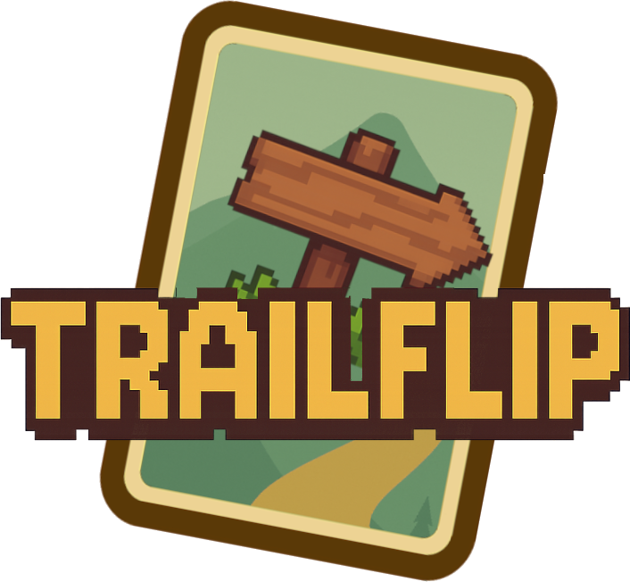
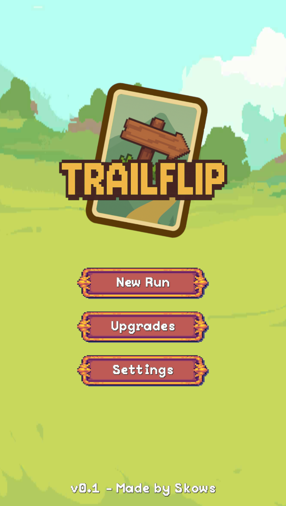
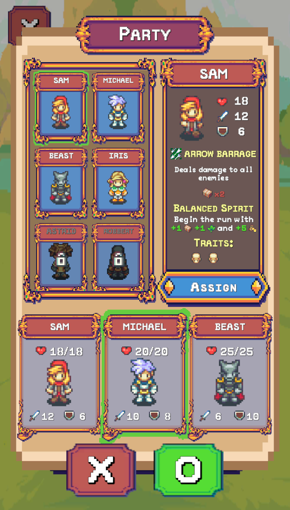
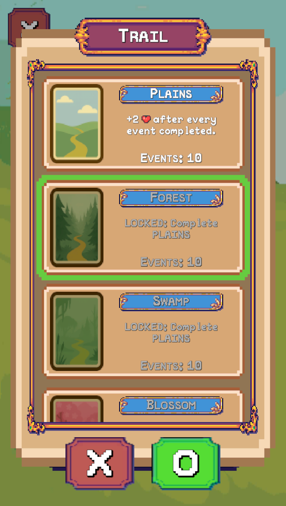
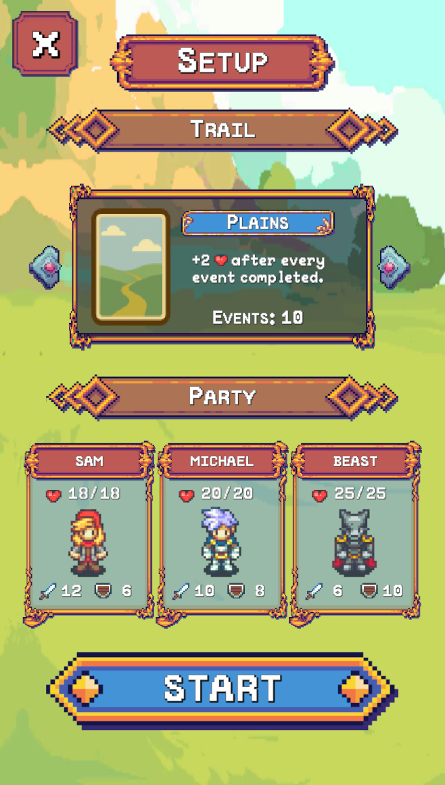
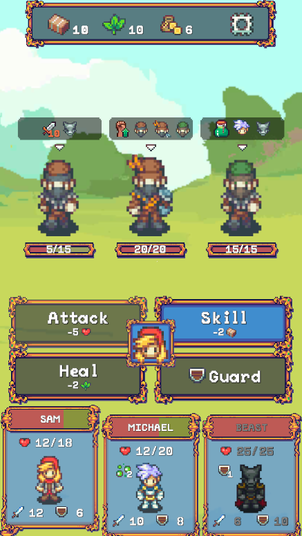

Trailflip
A mobile-first resource management JRPG focused on choice-based progression and short, replayable runs.

Overview
Trailflip is a prototype designed to explore how much depth can be achieved with very few systems. Inspired by mobile play patterns and classic journey-based games, each run challenges players to make it to the end of a trail while managing limited resources.
Design Goals
- Design for short, mobile-friendly sessions.
- Keep systems readable and approachable for non-gamers.
- Build tension through resource scarcity rather than combat complexity.
- Create a scalable foundation for future expansion.
Core Loop
Choose a trail, assemble a party, and progress through events that consume and replenish shared resources. Decisions and skills spend from the same limited pools, forcing tradeoffs between survival, power, and risk.
Screenshots
A look at the core screens and systems in the Trailflip prototype.





Key Systems
- Three core resources shared across the entire party
- Choice-driven events with persistent consequences
- Light JRPG battles where skills consume resources instead of MP
- Meta-progression upgrades that persist across runs
Design Philosophy
Trailflip was intentionally scoped small. Unlike Emberrun, this project prioritized execution over ambition. Features were added only if they reinforced the core loop and remained understandable at a glance.
Current Status
The prototype is currently paused while I source appropriate art and animation assets. The core systems function as intended, and I plan to return to the project once production constraints are resolved.
Why It Matters
Trailflip represents my growth as a designer: combining simple mechanics into something engaging, scalable, and realistic to build.
Want to Talk Prototypes?
I’m always happy to talk about design experiments and scope-conscious systems.
Contact Me